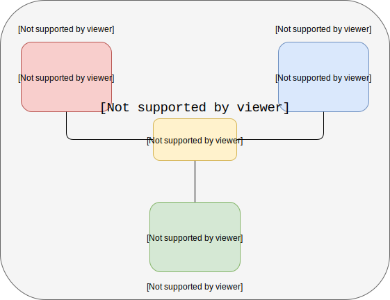
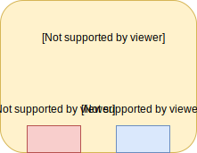
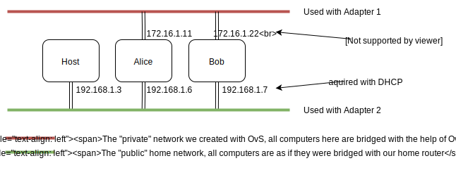
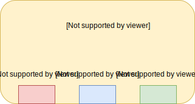

An intro to DPDK for mortals
DPDK can be a bit intimidating even if this is not your first time writing C network code. In this (rather long) post, I aim to offer a step by step introduction to DPDK, from understanding its usefulness, to setting up the environment, to finally writing a small program that uses the library. Take your time with the links, the steps and the commands. Don’t overwhelm yourself. See you on the other side!
Motivation
Sometimes you just want to process packets at line rate. This means you need to process about 14Mpps on a 10Gbps interface. A standard GNU/Linux setup can reach a throughput of about 1Mpps. Of course, even 1Mpps is amazingly more packets per second than any one user can know what to do with. Such rates are mostly needed for specialized applications that are running on general purpose computers. But why would one want to do such a thing? Why not buy an embedded black-box enterprise solution, a thingy that is made with low-level stuff (maybe ASICs, FPGAs, native C code) and instead introduce all those layers of abstractions with operating systems and the like?
It’s true, such low-level solutions still exist. However there is also a new approach in network architectures called Network Function Virtualization commonly seen as NFV. The idea is that instead of this ‘specialized thingy’ (like this one) you instead use a general purpose computer (like this one). What’s good with such a computer is that everything can be virtual. You can spawn OSs, switches, even whole LANs, all inside this server. You can even interconnect many such computers and make even more intricate topologies and operations. When one virtual network is no longer needed you can just shut it down. The empty ‘space’ left can be covered by an other process that needs to run instead of being wasted. Let alone being able to edit the source code to your needs, make security fixes or develop new features. Of course there is much more to NFV. You can start from wikipedia or sdxcentral if you are so inclined.
{kind=link}
{kind=link}
This post is going to be a guide through the setup of such Virtual Network Function all inside your computer, with the help of DPDK of course.
What is DPDK?
I suppose that if you are reading this you are somewhat familiar with DPDK. However, I can try to give my take on it. If I had to describe DPDK in the simplest fashion I would say this: It is a library written in C that bypasses the kernel, brings the packets to the userspace and offers efficient ways to manipulate them. It preallocates memory (no mallocs during runtime), it polls the NIC instead of using interrupts and uses efficient data structures.
What you will need
- A computer with enough RAM (let’s say 4GB?) and some kind of GNU/Linux
- Oracle VM VirtualBox
- Open vSwitch
- DPDK
- Fast access to your debugging hat
The main idea
Here is what we are going to do: Have your computer spawn a virtual switch which will in turn interconnect three different virtual machines running on VirtualBox, one of which will be the VNF. Here is a picture:

The problem is this: Alice and Bob like to send files and messages to each other. However Eve, the evil user of Proxy has configured the switch in such a way that it forwards any packet received to herself too! Now that all packets reach the Proxy, Eve has one final and crucial mission: To build a fast packet capture program, to log everything of interest. Naturally, she has asked for our help, which we will of course happily provide (she doesn’t know of tcpdump, shhh…)
But why is this a VNF? Well because, to put it simply, we can bundle it in a standalone image, and whenever we need a fast packet capturer, boot it with the correct configuration and let everything take care of itself. If the traffic becomes too big for one instance of the packet capturer, we could always make more copies and deploy them accordingly.
This is one of the simplest VNFs one can build. More challenging ones include Deep Packet Inspection VNFs, firewall VNFs, or load balancing VNFs. In all these cases one generally looks in the packet contents to decide what to do with a packet. Drop it? Forward it? Log it? Respond with a certain message to the sender?
Setting up Alice and Bob
We can start by giving Alice and Bob two computers to communicate.
To do this, first install VirtualBox in some way. This is going to be the place Alice and Bob (and of course later the Proxy) will live. Then, we have to choose an OS for them. I used Ubuntu Server. There is no need for a graphical interface. Let’s keep it lightweight. After all, we will be spawning three different Virtual Machines.
At the time of writing 18.04 is the latest LTS release and this is what I am going to install. I will then create the first two virtual machines, one called Alice and one called Bob (you can also create the Proxy too, but we will not be using it for now). I used alice and bob as names for the first and the second VM respectively for every name field that was requested. Any configuration I do from now on applies to all the VMs -in cases it does not, I will explicitly say so.
When you first install a Virtual Machine on VirtualBox its network is automatically configured to NAT, as it is a good default. It allows you to have connectivity to ‘the outside world’ in order to install updates, surf the Internet, etc. However, you can also surf the Internet in a different way, using a Bridged Adapter and binding it to your wireless or wired interface. This mode is the one we will be using. You can check out what this and the other networking modes mean here and here. Don’t be afraid to become familiar with them if you aren’t already!
For our purposes, we will need two interfaces, so enable the first two adapters. The first one will be used for building our DPDK network and testing our program and the second one in order to have connectivity to the Internet. Make the first one Not Attached (because we haven’t created our DPDK network yet) and the second one Bridged to your wired or wireless interface (this one is hopefully already there). After you have enabled these two adapters, go ahead and boot the two virtual machines.
By using Bridged Networking on the second adapter, we create a small network in which the host (your laptop or your PC) and all the VMs are visible to each other, as if they are in the same subnet. As a first step, we can check that Alice and Bob can send packets to each other. We can test this by making a simple nmap scan in our local network. Alice and Bob should show up. Something in the lines of nmap -F 192.168.1.1/24 should work, adjusting the notation for your own network. This is the output for me
Starting Nmap 7.01 ( https://nmap.org ) at 2019-03-07 19:49 EET
Nmap scan report for gtw (192.168.1.1)
Host is up (0.029s latency).
Not shown: 97 closed ports
PORT STATE SERVICE
53/tcp open domain
80/tcp open http
443/tcp open https
Nmap scan report for ngt (192.168.1.5)
Host is up (0.00032s latency).
Not shown: 99 closed ports
PORT STATE SERVICE
22/tcp open ssh
Nmap scan report for alice (192.168.1.16)
Host is up (0.068s latency).
Not shown: 99 closed ports
PORT STATE SERVICE
22/tcp open ssh
Nmap scan report for bob (192.168.1.17)
Host is up (0.068s latency).
Not shown: 99 closed ports
PORT STATE SERVICE
22/tcp open ssh
Nmap done: 256 IP addresses (4 hosts up) scanned in 3.15 secondsWe can see that both alice and bob are up. The other two machines are the default gateway (gtw) and the host (ngt). There are many other tests you can run. For example test if the two machines (alice and bob) can ping each other.
In order to make your life easier for what is to follow, you should edit the /etc/network/interfaces file for each machine. Here is what is should look like:
# The loopback network interface auto lo iface lo inet loopback # The dpdk-looking interface auto enp0s3 allow-hotplug enp0s3 iface enp0s3 inet static address 172.16.1.22 netmask 255.255.255.0 # The internet-looking interface auto enp0s8 allow-hotplug enp0s8 iface enp0s8 inet dhcp
There is a non-zero chance that the names of the interfaces will differ in your case. Change them accordingly. (ip link show may help to find out their names). This configuration will tell the first adapter (enp0s3, the one we will use for DPDK) to have a static IP. Notice that we can choose whatever we like as an IP for this interface because the network created with enp0s3 will be local and cut out from the rest of the world. You could have thus chosen anything, for example 122.122.122.122 or 10.12.13.14. It doesn’t matter (as long as you set the subnet mask correctly). This configuration will also tell your second network adapter (enp0s8, the one bridged with your computer’s interface) to request an IP using DHCP. In this way every time you boot the VM, the interfaces will automatically be assigend IP’s.
Note:
Don't forget to apply this configuration to both machines
(they should however have different static IP's, I chose 172.16.1.11 and 172.16.1.22)Installing openssh-server (optional)
Because I find having to work with terminal environments in VirtualBox cumbersome, I prefer to install openssh-server and connect to every VM from my terminal. It is very simple to do if you want to:
# in your VM (e.g alice) $ sudo apt install openssh-server # in your host, to connect to alice (IP may differ) $ ssh alice@192.168.1.16
# and now you can do everything from here! Last login: Thu May 16 16:38:46 2019 alice@alice:~$
Setting up the switch
We can continue our journey by simply introducing the switch to the equation (before it becomes evil and starts sending packets here and there). Up to now Alice and Bob were connected through their second adapter, with Virtual Box playing the role of the switch. Now we will add our own switch and create a second network using the first adapter. It’s something like your computer having two NICs and connecting to two different networks simultaneously. But with the virtual adapters VirtualBox offers, we can do it with no cost at all. Isn’t the virtual space beautiful?
As you may have guessed we will use Open vSwitch. Let’s install it first. On Ubuntu based distributions this is done like so:
sudo apt install openvswitch-switch
but on other distributions you may have to use another package manager. You can consider installing from source too! (more info here)
When this is done, go ahead and start the ovs deamon
sudo /usr/local/share/openvswitch/scripts/ovs-ctl start(the path may vary depending on the way you installed ovs)
this should output something like the following:
* Starting ovsdb-server
* system ID not configured, please use --system-id
* Configuring Open vSwitch system IDs
* Inserting openvswitch module
* Starting ovs-vswitchd
* Enabling remote OVSDB managersYou know what this means? That your computer is now a habitable environment for a switch!
Two are the basic command line tools that we are going to use. ovs-vsctl and ovs-ofctl. vsctl stands for VSwitchd ConTroL and as such it is mainly concerned with querying and modifying the OvS database. On the other hand ovs-ofctl stands for OpenFlow ConTroL. From here we can create rules for our switches or see their current status. Anything relating to OpenFlow really.
- Let’s start by creating a bridge. It’s as simple as that:
sudo ovs-vsctl add-br br0
- Then create two TAP (link here) interfaces, one for Alice and one for Bob
sudo ip tuntap add mode tap vnet-alice sudo ip tuntap add mode tap vnet-bob
- Bring them up
sudo ip link set vnet-alice up sudo ip link set vnet-bob up
- And then add them to the bridge
br0as ports
sudo ovs-vsctl add-port br0 vnet-alice sudo ovs-vsctl add-port br0 vnet-bob
So here is what we essentially get with the above configuration:

Those two colored boxes are ports. If this was a real bridge and not a virtual one you could really get your Ethernet cables from each PC and stick each one to the respective port (just like you do when you connect your computer to your home router via Ethernet). Now these cables are virtual too, so we do this “sticking” through the VirtualBox GUI.
You can now boot the machines with the first Adapter’s ‘Attached to’ set to Bridged Adapter (the one we left “Not Attached” earlier) and the ‘Name’ set to vnet-alice and vnet-bob accordingly. Due to the configuration we did earlier in /etc/network/interfaces the ports will be assigned IPs. This means that we can get the two machines communicating again, this time over OvS and not over VirtualBox.
To put it differently, now alice and bob can communicate through two distinct routes:
- The first one is through your local subnet (in our case
192.168.1.1/24) - And the second one is through the subnet we just created, bridged with OvS (in our case
172.16.1.1/24)
(To verify this, try to see that both ping 192.168.1.X and ping 172.16.1.X work, replacing X with a valid IP for each subnet)
The same shown as an image:

Making the switch evil
If you haven’t created the third and last VM, now is the time! Let’s create the Proxy, the place our DPDK code will run on.
Just create the VM and do the respective configuration we did on Alice and Bob. Here is a quick recap:
On the host:
sudo ip tuntap add mode tap vnet-proxy
sudo ip link set vnet-proxy up
sudo ovs-vsctl add-port br0 vnet-proxy
On the VM:
# edit /etc/network/interfaces # The loopback network interface auto lo iface lo inet loopback # The dpdk-looking interface auto enp0s3 allow-hotplug enp0s3 iface enp0s3 inet static address 172.16.1.66 netmask 255.255.255.0 # The internet-looking interface auto enp0s8 allow-hotplug enp0s8 iface enp0s8 inet dhcp
On the Proxy Virtual Box Network Settings, set the first adapter to connect to vnet-proxy and the second one to your network, just like we did before.
Also, it is very important to set the Promiscuous mode to Allow all or else VirtualBox will drop the packets not destined for Proxy (which we of course don’t like)
To see some more information on the bridge and its various ports we can issue the command
sudo ovs-ofctl show br0
in my case the output is
OFPT_FEATURES_REPLY (xid=0x2): dpid:00005e6ae5a0cd4e
n_tables:254, n_buffers:0
capabilities: FLOW_STATS TABLE_STATS PORT_STATS QUEUE_STATS ARP_MATCH_IP
actions: output enqueue set_vlan_vid set_vlan_pcp strip_vlan mod_dl_src
mod_dl_dst mod_nw_src mod_nw_dst mod_nw_tos mod_tp_src mod_tp_dst
1(vnet-alice): addr:16:98:bf:30:4d:aa
config: 0
state: LINK_DOWN
current: 10MB-FD COPPER
speed: 10 Mbps now, 0 Mbps max
2(vnet-bob): addr:32:1b:e4:76:a8:5b
config: 0
state: LINK_DOWN
current: 10MB-FD COPPER
speed: 10 Mbps now, 0 Mbps max
3(vnet-proxy): addr:1e:73:60:93:58:64
config: 0
state: LINK_DOWN
current: 10MB-FD COPPER
speed: 10 Mbps now, 0 Mbps max
LOCAL(br0): addr:5e:6a:e5:a0:cd:4e
config: PORT_DOWN
state: LINK_DOWN
speed: 0 Mbps now, 0 Mbps max
OFPT_GET_CONFIG_REPLY (xid=0x4): frags=normal miss_send_len=0Thus port 1 is Alice, port 2 is Bob and port 3 is the Proxy. It may be different in your case but it won’t matter. Here is the updated view of our bridge:

Now it’s time for the br0 to become evil. For it to be evil, it has to have a way to forward packets to PC-Proxy when they conform to certain criteria.
Let’s add some rules then. These rules will modify the switch in such a way that every packet will reach Proxy too.
# delete old rules sudo ovs-ofctl del-flows br0 # anything sent to Alice must be forwarded to both vnet-proxy and vnet-alice sudo ovs-ofctl add-flow br0 in_port="vnet-alice",actions=output:"vnet-proxy",normal # anything sent to Bob must be forwarded to both vnet-proxy and vnet-bob sudo ovs-ofctl add-flow br0 in_port="vnet-bob",actions=output:"vnet-proxy",normal
DPDK to the rescue
It’s about time we did some coding. The switch is sending us the packets Alice and Bob are exchanging but we have no way yet to see them! (well, excluding tcpdum :P). We will now build our simple packet capture utility using DPDK. It won’t be elaborate at all, however, if you are anything like me when I first used DPDK, it could be your first time writing C programs to capture real traffic! And this is amazing.
We will now get the dpdk sources, compile the project and modify our network card so that we can run dpdk code on it. For this, boot PC-Proxy and issue these commands.
sudo apt install -y make gcc libnuma-dev build-essential python pkg-config wget https://fast.dpdk.org/rel/dpdk-18.05.1.tar.xz tar xf dpdk-18.05.1.tar.xz mv dpdk-stable-18.05.1 dpdk
There are a few more steps before we can really start the development cycle. We have to set up everything the way DPDK wants it to be in order to work. Luckily, DPDK has bundled in some useful scripts so that we don’t have to reinvent the wheel. Navigate to dpdk/usertools/ and look for the file called dpdk-setup.py. The name of the file does not lie, it will indeed help us set it up.
Tip:
Here are some useful commands for when using the shell:
Ctrl-A brings you to the beginning of the line
Ctrl-E brings you to the end of the line
Ctrl-U deletes everything you have written in the lineBefore executing it, first bring down the interface you decided to give to DPDK. DPDK will take over it now. In my case, I used this command:
sudo ifconfig enp0s3 downNow we are ready to run dpdk-setup.py. When you first run the script you will be met with a looong list of available operations. However only some are relevant to us.
Tip:
Shift - (PgUp/PgDn) is your friend (or Ctrl-Shift, depending on the terminal)- Compile (I use No.
15, x86_64 with gcc) - Insert the driver (I use No.
18, igb_uio) - Create hugepages for non-NUMA systems (No.
21, 64 should be fine) - Bind the network interface to dpdk (No.
24aaaand … dpdk takes over the network interface!)
Aaahhh, at last. We can write some code
Developing the packet capture
The skeleton of our development endeavors is going to be a file dpdk offers bundled with the library under the examples/. It is a bear bones application that has some annoying things already taken care of so that we can focus on developing the logic. I don’t know if you took the hint but the file we are interested in is indeed under skeleton/. It is called basicfwd.c and it has a very very simple dpdk application. I like this file because it deals with all the initialization stuff so that we don’t have to mess with them yet, and also leaves enough space to make small changes and observe the outcome.
This program does some things that we don’t want it to do. So first of, we are going to remove some unnecessary code and then insert our own. What this program does essentially, is to receive frames in one port and forward them in a second one. We, however, only want to receive packets and maybe print them to the screen. Nothing more. So there are a couple of places even the skeleton contains too much for our purposes. There is still some code that we will have to remove. Then we add our own.
The whole file is just three functions, port_init(), lcore_main() and main(). port_init() we don’t even care about. We pray it does what it claims it does correctly and move on. The main() function we only care about slightly, to the extend that we can see the general structure of the program; initialize this, take that, call the other function etc. Our changes will be focused on lcore_main(). A function that essentially is called and then runs forever.
It is during this function call that packets are “received” and can be “sent”. On of the ways DPDK can take data from the wire is the function rte_eth_rx_burst() which when called fills in a buffer of packets. The buffer can be thought of as a chunk of memory where the packets reside after the call. It returns the number of packets that where eventually received. So then buf[0] is the first packet, buf[1] is the second, and so on. This buffer except for the data that were indeed in the wire, contains some metadata. So in order to reach the point the real data is, we can use a function DPDK conveniently provides just for this purpose. This is rte_pktmbuf_mtod. Here is how it works
#include <rte_ip.h> #include <rte_tcp.h> // fill in the buffer const uint16_t nb_rx = rte_eth_rx_burst(port, 0, bufs, BURST_SIZE); // now bufs is an array (of length nb_rx) of packets together with their metadata // take the first packet and make eth point to the start of the Ethernet frame struct ether_hdr *eth = rte_pktmbuf_mtod(bufs[0], struct ether_hdr*); // to reach the ip header, it is much simpler, just some pointer arithmetic struct ipv4_hdr *ip = (struct ipv4_hdr*)(eth + 1); // the same to reach the tcp header struct tcp_hdr *tcp = (struct tcp_hdr*)(ip + 1);
Now that we know how to get hold of the packets, let’s start editing.
Remove: the ‘even port’ check
For our purposes we don’t care if the number of available ports is even or odd. We just need one! The one port that receives the packets. So remove
if (nb_ports < 2 || (nb_ports & 1)) rte_exit(EXIT_FAILURE, "Error: number of ports must be even\n");
Remove: the ‘tx_burst’
We don’t want to send anything, we just want to capture packets. (You could however, and wreck havoc on your network. You would essentially duplicate each received frame). So remove
/* Send burst of TX packets, to second port of pair. */ const uint16_t nb_tx = rte_eth_tx_burst(port ^ 1, 0, bufs, nb_rx);
Note:
In network code, TX is used to mean Transmit and RX to mean ReceiveRemove: the ‘if tx < rx’ check
A check is made like to see if some packets were not transmitted, and if it is true free them. Given that this will always be the case in our example, there is no need to test for it. (we only remove the outer if, we still want to free the buffers in the for loop)
if (unlikely(nb_tx < nb_rx)) { ... }
At this point we are free to write our code.
Add: the ‘print MAC address’ function
Usually my first step in writing code is to create function that will give some visual queues to see if everything is normal. In this case my first step was to create a function to print the a MAC address. When I receive a packet I send the Source and Destination MAC address to this function. That way I can clearly see if I am getting the frames I am supposed to when executing the program. After all, what is a packet capturing utility without seeing some MAC addresses?
void print_mac(struct ether_addr addr) { printf("\t%02" PRIx8 " %02" PRIx8 " %02" PRIx8 " %02" PRIx8 " %02" PRIx8 " %02" PRIx8 "\n", addr.addr_bytes[0], addr.addr_bytes[1], addr.addr_bytes[2], addr.addr_bytes[3], addr.addr_bytes[4], addr.addr_bytes[5]); }
This function takes as a parameter a structure struct ether_addr that is defined in the DPDK API. It contains the Destination and Source MAC addresses and the Ethernet Type. We can simply call it as print_mac(eth->d_addr) to print out the destination address.
Add: the ‘print IP address’ function
MAC addresses are good, but IP addresses are even better. Here is a function to print them.
#include <arpa/inet.h> void print_ip(uint32_t ipn) { uint8_t bytes[4]; uint32_t ip = ntohl(ipn); bytes[0] = (ip >> 0) & 0xFF; bytes[1] = (ip >> 8) & 0xFF; bytes[2] = (ip >> 16) & 0xFF; bytes[3] = (ip >> 24) & 0xFF; printf("\t%d.%d.%d.%d\n", bytes[3], bytes[2], bytes[1], bytes[0]); }
Add: the ‘hexdump’ capability
DPDK has a built-in function to print hexdumps. It is a nice feature to have in a packet capturer. The only thing we need is to include the header and then the function becomes available to us.
#include <rte_hexdump.h> ... rte_hexdump(stdout, NULL, (const void*) data, 30)
At this point we have everything we need to make an elementary packet capture utility.
Running your program
You’ve made some changes. Now it’s time to test them.
Tip:
Don't forget to run the executable with `sudo`
Tip:
You have to export the variable RTE_SDK so that the compiler knows where to find the DPDK sourcesdproxy@proxy:~$ cd dpdk
dproxy@proxy:~/dpdk$ export RTE_SDK=$(pwd) # must be set to the root of dpdk!
dproxy@proxy:~/dpdk$ cd examples/skeleton/
dproxy@proxy:~/dpdk/examples/skeleton$ make
CC basicfwd.o
LD basicfwd
INSTALL-APP basicfwd
INSTALL-MAP basicfwd.map
dproxy@proxy:~/dpdk/examples/skeleton$ sudo ./build/basicfwd
[sudo] password for dproxy:
EAL: Detected 2 lcore(s)
EAL: Detected 1 NUMA nodes
EAL: Multi-process socket /var/run/dpdk/rte/mp_socket
EAL: Probing VFIO support...
EAL: PCI device 0000:00:03.0 on NUMA socket -1
EAL: Invalid NUMA socket, default to 0
EAL: probe driver: 8086:100e net_e1000_em
EAL: PCI device 0000:00:08.0 on NUMA socket -1
EAL: Invalid NUMA socket, default to 0
EAL: probe driver: 8086:100e net_e1000_em
Port 0 MAC: 08 00 27 77 3e 77
WARNING: Too many lcores enabled. Only 1 used.
Core 0 forwarding packets. [Ctrl+C to quit]
^C
dproxy@proxy:~/dpdk/examples/skeleton$
And that’s it!
You can find the code I used in a gist here
You can find the program in action here (20MB gif)
Sources:
- https://www.netgate.com/blog/further-a-roadmap-for-pfsense.html
- https://blog.cloudflare.com/how-to-receive-a-million-packets/
- https://www.sdxcentral.com/networking/nfv/definitions/whats-network-functions-virtualization-nfv/
- https://www.virtualbox.org/manual/ch06.html
- https://blogs.oracle.com/scoter/networking-in-virtualbox-v2
- https://www.saminiir.com/openvpn-puts-packets-inside-your-packets/
- https://www.youtube.com/user/mahler711/
- https://lwn.net/Articles/629155/